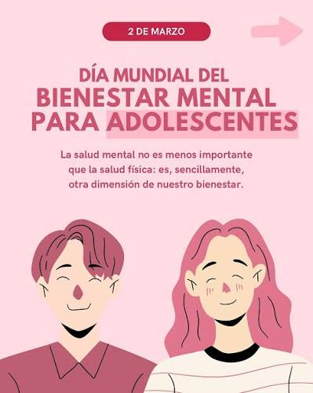

Redes de bienestar
Descubre actividades y habitos que pueden ayudarte a cuidar tus emociones, relajarte y mantener un equilibrio en tu vida diaria.
Explorar bienestarCuidar de tu mente es parte de cuidar de ti. Aprende a reconocer tus emociones, descubre habitos saludables y recuerda que pedir ayuda tambien es una forma de ser fuerte.
La salud mental es parte de nuestra salud. Hablar de ella es el primer paso para cuidarla.
Explora estas imagenes y descubre por que es importante cuidar nuestro bienestar emocional.



Encuentra informacion que te ayude a comprender tus emociones y a cuidar tu bienestar.
Descubre actividades y habitos que pueden ayudarte a cuidar tus emociones, relajarte y mantener un equilibrio en tu vida diaria.
Explorar bienestarConoce algunos factores que pueden afectar la salud mental, sus posibles consecuencias y la importancia de buscar apoyo.
Conocer la problematicaReconocer lo que sentimos, hablar con alguien de confianza y pedir ayuda cuando la necesitamos son pasos importantes para nuestro bienestar.
Aprender masTe invitamos a ver este video para comprender mejor la importancia de cuidar nuestra salud mental y prestar atencion a nuestro bienestar emocional.
Ver video en YouTubeHablar con alguien de confianza y buscar apoyo profesional cuando sea necesario tambien es cuidarte.